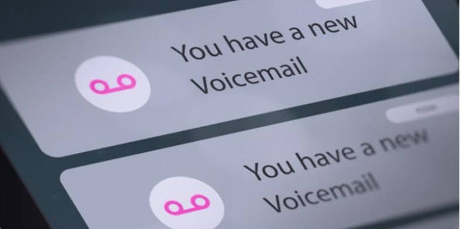

വോയ്സ് മെയിലിനെപ്പറ്റി ആരോ ഗ്രൂപ്പിൽ ചോദിച്ചിരുന്നു.
എന്താണ് വോയ്സ് മെയിൽ?
ഇംഗ്ലീഷ് സിനിമകളിൽ ഒക്കെ കണ്ടിട്ടുണ്ടാവും, "Hello... This is John, please leave a message"
നമ്മുടെ ഫോൺ സ്വിച്ച് ഓഫോ പരിധിക്ക് പുറത്തോ ഒക്കെ ആയിരിക്കുന്ന സമയത്ത് നമ്മളെ വിളിക്കുന്ന വ്യക്തിക്ക് നമുക്കായി ഒരു വോയ്സ് മെസ്സേജ് റെക്കോർഡ് ചെയ്ത് അയക്കാനും പിന്നീട് നമുക്ക് ഇത് കേൾക്കാനും കഴിയും.
നമ്മുടെ നാട്ടിൽ കുറെ വർഷങ്ങൾക്ക് മുന്നേ ഈ സേവനം by default activated ആയിരുന്നു.
അന്നൊക്കെ വിളിച്ചാൽ കിട്ടാത്തപ്പോൾ ഒക്കെ, "താങ്കൾ വിളിക്കുന്ന നമ്പർ പരിധിക്ക് പുറത്താണ്, ബീപ് നു ശേഷം വോയ്സ് മെസ്സേജ് റെക്കോഡ് ചെയ്യുക.'" എന്ന് സ്ഥിരം കേൾക്കാമായിരുന്നു.
എന്നാൽ ഇപ്പോൾ കുറച്ചു കാലമായി ഇതിനെപ്പറ്റി കേൾക്കാറേ ഇല്ല.
Airtel ഉപയോഗിക്കുന്നവർ *321*671# ഡയൽ ചെയ്താൽ voice mail സേവനം ഫ്രീ ആയി activate ചെയ്യാവുന്നതാണ്.
ശേഷം 52555 (toll free) ലേക്ക് വിളിച്ച് Welcome മെസ്സേജ് റെക്കോഡ് ചെയ്യാം. ഈ നമ്പറിൽ വിളിച്ചു തന്നെ നമുക്ക് വന്ന വോയ്സ് മെയിലുകൾ കേൾക്കുകയും ചെയ്യാം.
Phone dialer > settings > voice mail
എന്നുള്ളതിൽ voice mailbox നമ്പർ 52555 എന്ന് സേവ് ചെയ്താൽ dialer ൽ 1 press ചെയ്ത് എളുപ്പത്തിൽ voice mail ലേക്ക് വിളിക്കാം.
Jio, Vi, BSNL ൽ ഒക്കെ എങ്ങനെ voice mail activate ചെയ്യാം എന്ന് അറിയാവുന്നവർ കമന്റ് ചെയ്യുക....
Read more:
• Android love ❤️